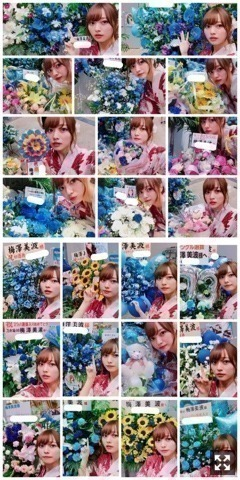
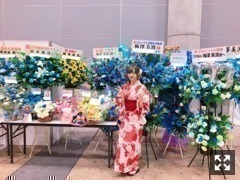
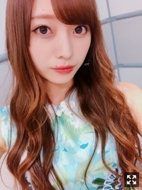

すっかり夏だね〜気づけば７月もあと半月
みなさまこんにちは！！
乃木坂46 ３期生の
梅澤美波です！！
昨日の握手会の！！
お祭り行きたいなあ〜
最近暑すぎて
ちょっと外歩いただけで
もう汗びっしょり( .. )
へっとへとになるね(；＿；)
昨日の握手会！幕張メッセ！
暑い中お越しくださった皆様
ありがとうございました！
久しぶりの握手会〜
今回は全ての部で浴衣を着ました！
１部：黒
２部、３部：ピンク
４部、５部：赤！
３種類！！
夏気分味わっていただけましたか？
わたしは上にも載せた写真の
赤が１番お気に入り！！
ファンの方からは
ピンクが好評だった気が☺︎
私服でなかなか着ない色だから
浴衣なら！と思って☺︎
浴衣はたくさん持ってるの〜
選抜発表後、初の握手会だったので
たくさんの「おめでとう」を聞いて
とても嬉しくなりました。
喉の調子があまり良くなく、
小声での対応になってしまい
すみませんでした(；＿；)
何かを取り組む時、
張り切りすぎると、力みすぎると
すぐこうなってしまう。
大切で貴重な時間を、
本当に申し訳ないです、、
握手会を楽しませようとしてくれる
ファンの皆様には
本当に感謝しています(；＿；)
優しく言葉をかけてくれたり
思いやりのある言葉をもらったり
笑わせようとしてくれたり
私を楽しませようとしてくれる皆様を見て
心がぎゅっとなりました(；＿；)
それは私の役目なのに、、
本当にありがとうございます！
私のために涙してくれたり、
一緒に前を向いて進もうとしてくれたり、
私を見てくれてるファンの皆様が
本当に大切で大好き！
今後ともよろしくお願いします！

お花たちです！
見にくくてごめんなさい！
選抜おめでとう！のお花がたくさん。
幸せものです！
私のために時間を使ってくれて
本当にありがとう。
どんなお花がいいかな〜とか
どんな想いを込めようかな〜とか
デザインどうしようかな〜とか
たくさん考えてくれたんだろうなあ( .. )
これからも喜ぶ顔が見られるよう
おめでとう、頑張ろうねって声が
たくさん聴けるように
もっともっと頑張ります！

囲まれたあ〜 宝物！！
幸せ！
そして２１枚目シングルの
収録曲の詳細が公開になりました！
私は、
☆「ジコチューで行こう！」
☆「空扉」
☆「自分じゃない感じ」
☆「あんなに好きだったのに･･･」
の４曲に参加させていただいています！
大切な曲がこんなに増えました。
きっと私のアイドル人生の中で
１番思い出深いシングルになると思います！
☆表題曲の ジコチューで行こう！は
歌詞がとても斬新で
前向きになれる曲！
ダンスもとっても可愛いので
色んなところに目を向けて
楽しんでいただけたらいいな♪！
２番の歌詞がとても好き。☺︎
自分を改められる楽曲です◎
☆自分じゃない感じ は
３期生楽曲です！
毎シングル３期生楽曲を頂けていることに
とても感謝しています、
当たり前と思ってはいけないし
毎回大切に愛される楽曲になるよう
心を込めて皆様にお届けしたいです。☺︎
とてもクセになる曲！
レコーディングがめちゃくちゃ楽しかった！
何回も聴いて、愛してください☺︎
☆あんなに好きだったのに･･･ は
高校生クイズの楽曲です！
歌詞がとても切なく 青春を感じる曲！
歌うのがすごく楽しかった！
色んな方に聴いてほしいなあ〜
☆そして空扉！
とても大好きになった曲。
爽やかで気分が明るくなる！
映画「七つの大罪 天空の囚われ人」の
主題歌になっています！
タイアップを担当させて頂くからには
この作品をもっともっと盛り上げていきたい！
どれも素敵な曲ばかりです。
ぜひ、発売日を お楽しみに！
最近暑すぎて
夏バテで食欲無くなるかな〜とか
そんなこと思ってたけど
逆に食欲すごくて（笑）！
あと半月で
舞台「七つの大罪 The STAGE」も
本番を迎えるから
衣装が素敵なので
それに見合う体型にならねば！
と、焦っております、、（笑）
太るなよ〜！と
キャストの皆さんにいじられる（笑）
優しくて暖かいです☺︎
そんなこんなで
最近はグループでのお仕事と
舞台の稽古とを並行して
毎日バタバタしております！！
やることが多いのは
とてもありがたく嬉しいことです！！
いつも助けられ支えられてばかり、、
足を引っ張らないよう 頑張らないと！！
かすみんこと長谷川かすみちゃんとっ☺︎
かすみんがいると
現場がぱあっと明るくなります！
とっても優しくて可愛い！
だいすき(；＿；)
そして本日は！
緊急決定！７月１７日(火) 21時〜
ニコニコ生放送 「七つの大罪 The STAGE」開幕まで待てないSP
に出演します！
メリオダス役 納谷健さん
バン役 有澤樟太郎さん
ディアンヌ役 長谷川かすみさん
キング役 斎藤直紀さん
ゴウセル役 北村諒さん
演出の毛利亘宏さん
と出演させて頂きます！
ぜひ観に来てください∠( ˙-˙ )／
お知らせ◎
▽EX大衆 さま 発売中！
井上さんとの対談です！
▽７／２４ B.L.T. さま
ももこ、れんかと３人グラビア
▽７／２６ 週刊少年チャンピオン さま
ソロ表紙、ソログラビア
▽８／４ 日経エンタテインメント！さま
連載
▽８／５ スポニチ さま
れんかと対談
よろしくお願いします！
この間の音楽の日
ご覧くださった皆様
ありがとうございました！
「ジコチューで行こう！」初披露！
とても緊張しましたが
楽しくパフォーマンスできました！
いかがでしたか？
握手会で、新曲すごい好き！って声を
たくさん聞けたのが嬉しかったなあ〜
そしてインフルエンサーも
披露させて頂きました！
かなりプレッシャーがありましたが
私なりに今出来る精一杯のパフォーマンスをしました！
色々不安もありましたが
今立た せていただいてる場所で
何にも恐れず堂々とパフォーマンスすることが
今の私に出来ることだと思っています。
たくさん頂いているチャンスを
無駄にせず意味のあるものにできるよう
今後も頑張って参ります！

ジコチューで行こう！の衣装です
とても可愛い！！
私は水色のパンツ衣装！
いくつかパターンがあって
どれも可愛いので見てみてねっ
それでは！
また更新します！
自分への悔しさをすごく感じる！
足りないことは分かっているつもりだから
器用にやろうとせず一人でやろうとせず今は頑張ります！
Original：https://www.nogizaka46.com/s/n46/diary/detail/46039?ima=4952&cd=MEMBER